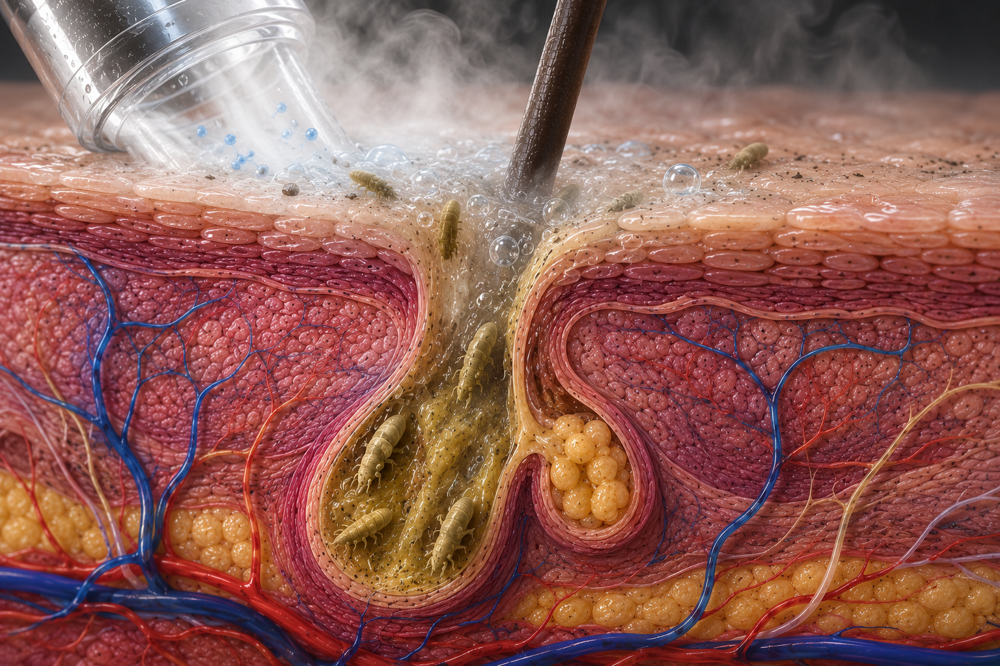
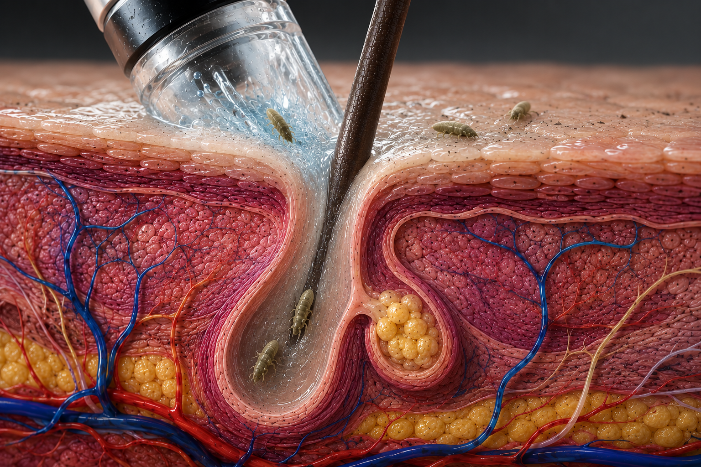
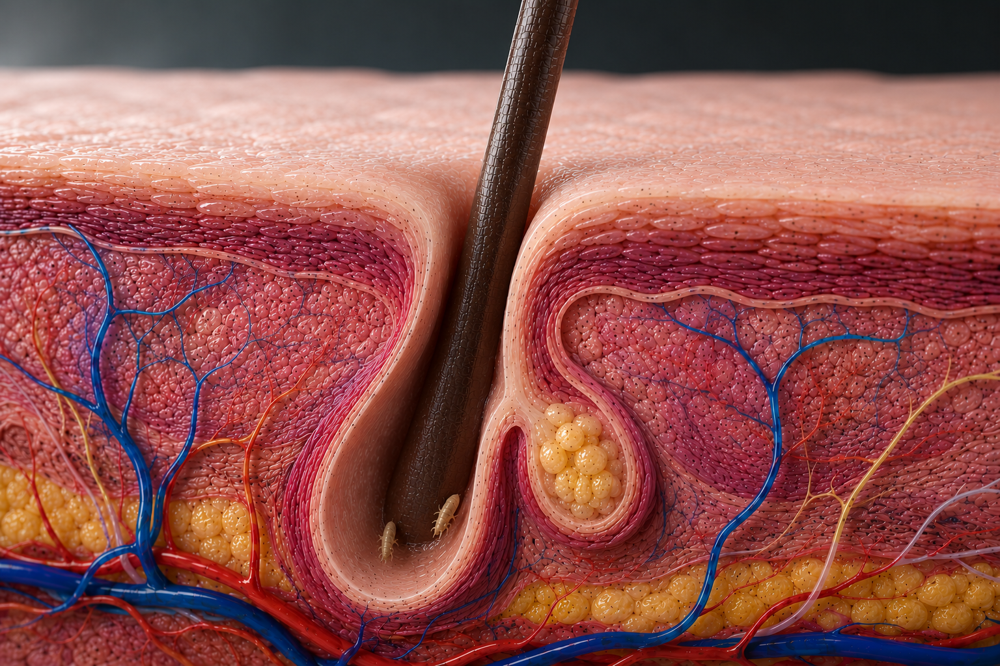
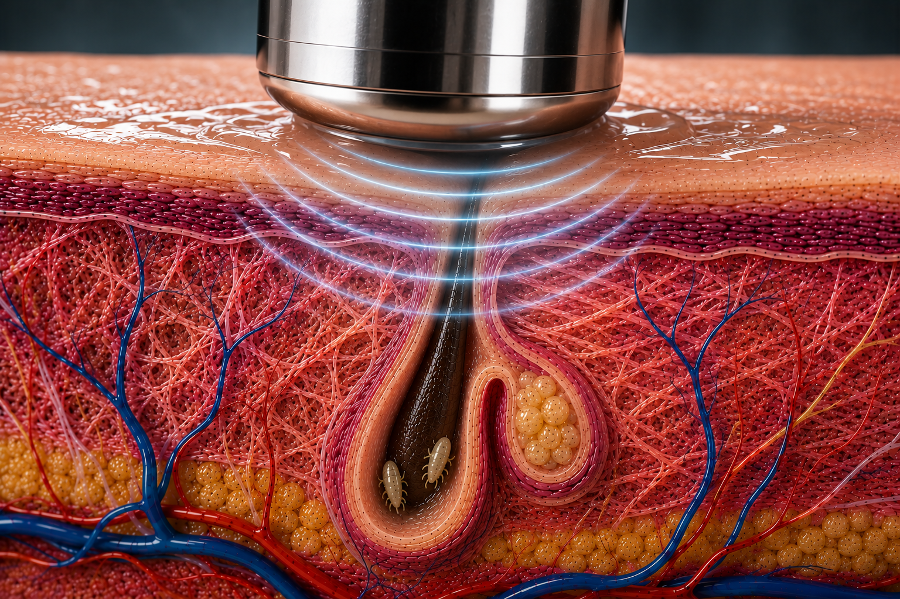
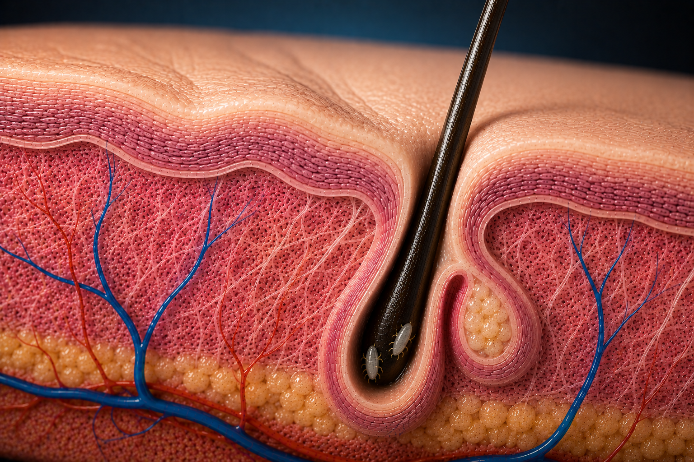
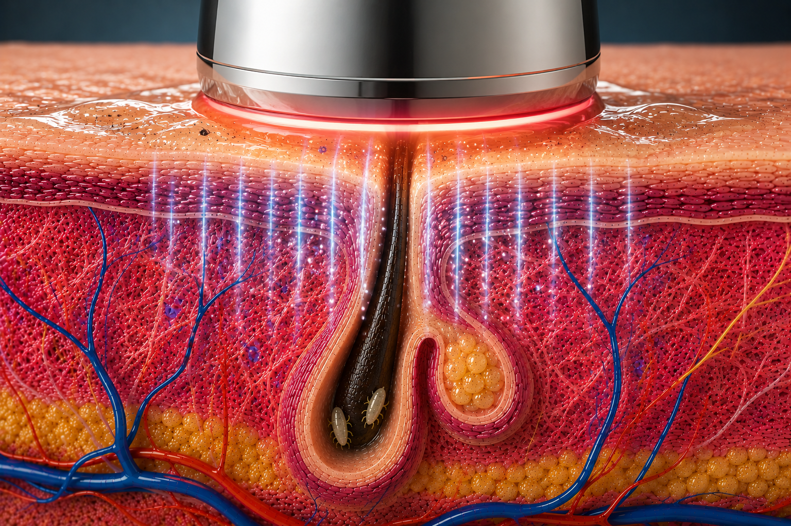
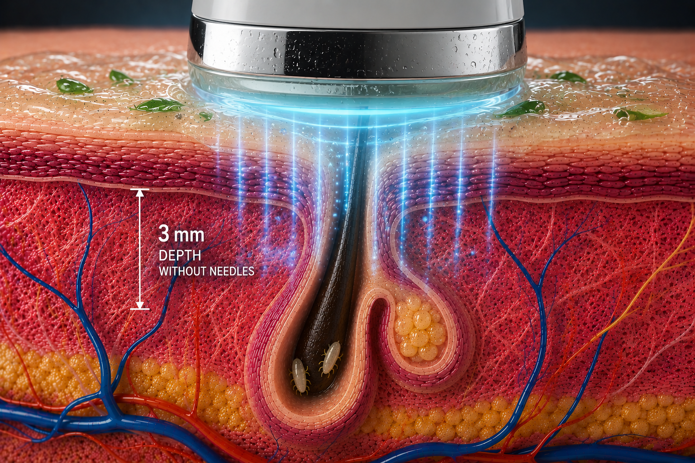
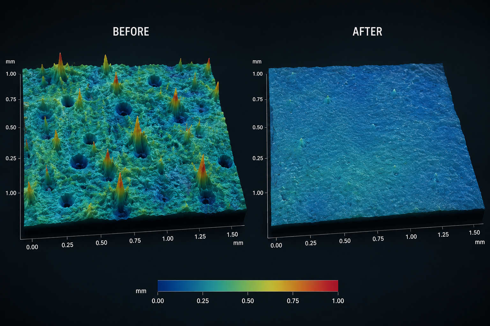
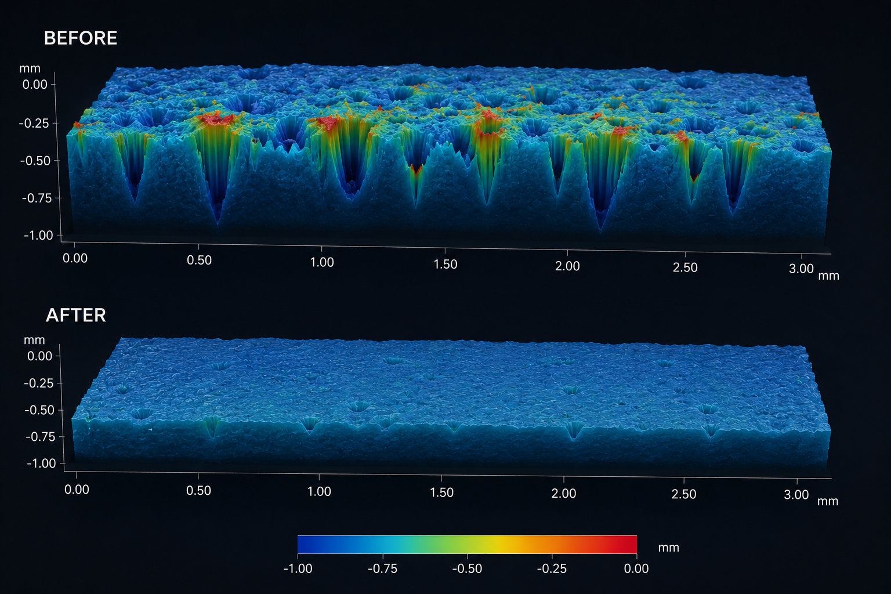
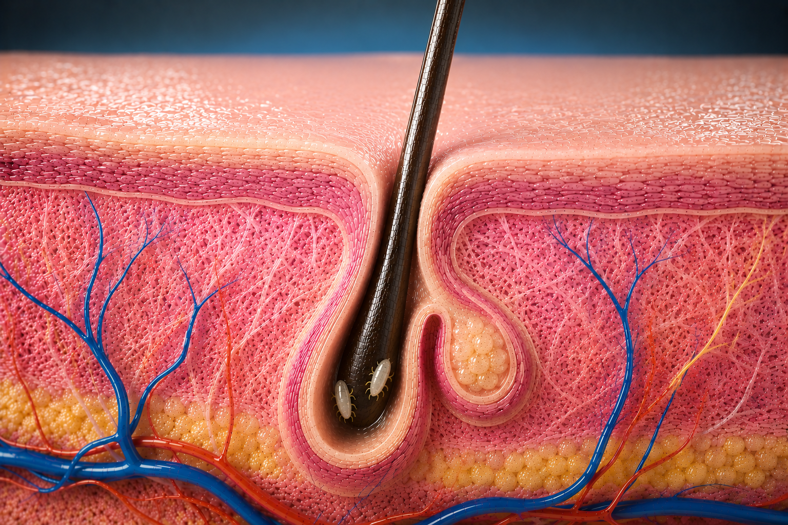

This stage is designed to complement the cleansing sequence with a purified, refreshed sensation before moving into skin-renewal care.

The Hydrofacial stage focuses on deep surface cleansing and extraction. It helps remove visible debris while hydrating the skin for a cleaner, fresher-looking finish.

Once buildup is lifted, the skin is better prepared for the treatment steps that follow. The goal is not simply to cleanse, but to create a visibly fresher foundation.

Clean skin can still show uneven texture, visible pores and early signs of loss of firmness. This is where the renewal-focused phase begins.

Las manchas de melanina asentadas y las líneas de expresión requieren energía térmica estructural. Esta fase rompe la rigidez epidérmica para preparar las células y activar la regeneración acelerada de elastina.
Pollagen is presented as the renewal stage of the experience: supporting a smoother-looking surface and a more polished, luminous appearance.

The warming phase is designed as an activation moment within the D-Cool protocol, preparing the skin for the transition into the cooling stage.

The cooling phase completes the D-Cool experience with a visibly fresh, revitalized finish that feels as good as it looks.


TEXTURE COMPARISON
SURFACE COMPARISON